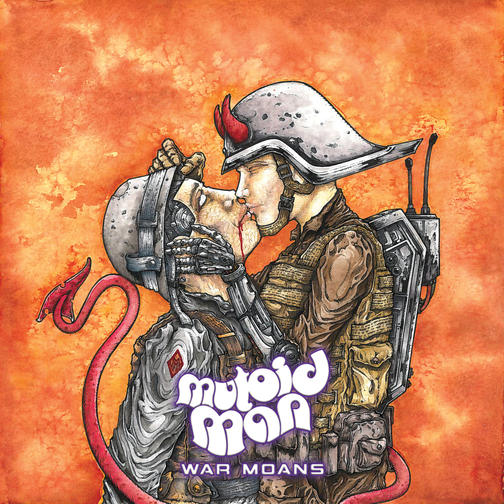
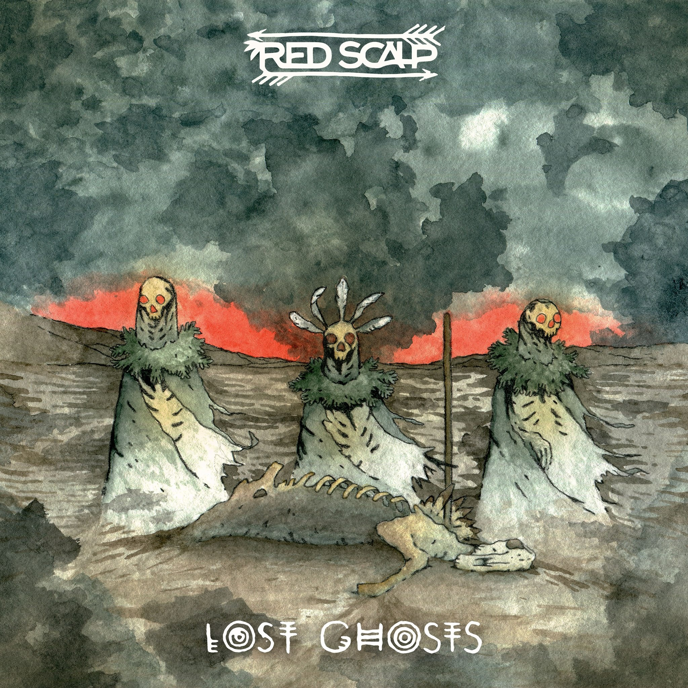

With their second attempt, Mutoid Man has managed to produce a studio album with a great deal of consistency, both relative to their first album, Bleeder, and as proof they can maintain their intense level of energy between outings. War Moans brings the same easy to enjoy, hard to define, punk-post-alt-core-something or other stylings as Bleeder, but now with a common theme tying all their songs together. Whereas Bleeder’s theme seemed to be words that sound like they’d be songs,
War Moans seems focused on relationships, specifically dangerous and ultimately damaging dalliances.
 Red Scalp is what you would get if Black Sabbath decided to have a native american theme throughout their music. This new album features five new tracks all with ominous themes of the supernatural and nature. This album is a wild ride from start to finish. Heavy guitar riffs, native american chanting, as well as saxophone solos are prominent on the album.
Continue here to read full review